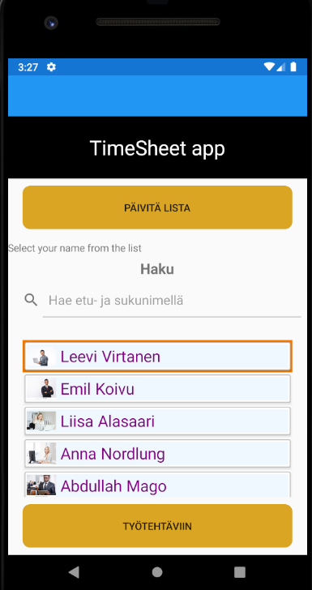
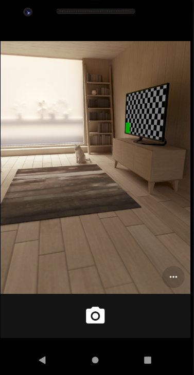
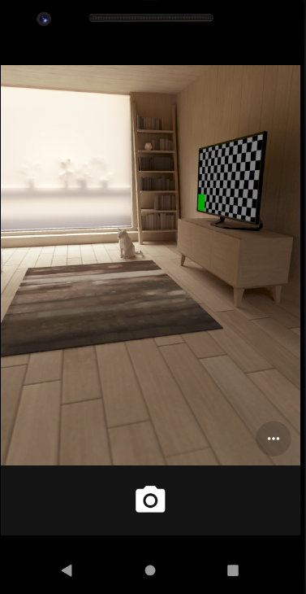

Tällä sivulla on kaksi erilaista Xamarin framework luomaa sovellusta. Ensimmäisellä sovelluksella (TimeSheetApp) on yhteys SQL-tietokantaan. Tämä sovellus näyttää taulukon työntekijöistä, näyttää mitä työtä työntekijä tekee juuri nyt ja käyttäjä voi aloittaa tai lopettaa työntekijöiden työn. Toinen sovellus xamarinCamera on helpompi kuin ensimmäinen sovellus. Sovellusta käynnistettäessä käyttäjä voi avata tallennetun kuvan tai tehdä uuden. Sen jälkeen se tallentaa kuvan puhelimen muistiin. Yllä olevassa kuvassa näkyy sovellusten ulkoasu.
Android sovellus
 
